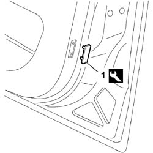

7005E70 REFLECTOR ON FRONT DOOR PANEL - R R
- Path
- Procedures > 70 FITTINGS > 7005 PASSENGER COMPARTMENT FRONT SIDE DOORS > 7005E FRONT DOOR TRIM > 7005E70 REFLECTOR ON FRONT DOOR PANEL - R R
- Kind
- repair procedure (removal / refitting; the operation number is the code)
- Applies to
- all engines; all production periods
- Interactive page
- https://sloeber94.github.io/elrnDB-fCrm/en/#/194000871
Applies to: all engines; all production periods
 Removing
Removing
 Refitting
Refitting- Open the front side door.
1. Using the special tool release the reflector from its housing and keep it.
Tool | Description | Function | Validity |
|---|---|---|---|
1878077000 | Knife | Retainer removal |

Applies to: all engines; all production periods
Refitting
Removing- Fit the reflector in its housing pressing in the areas of the mounting pins.